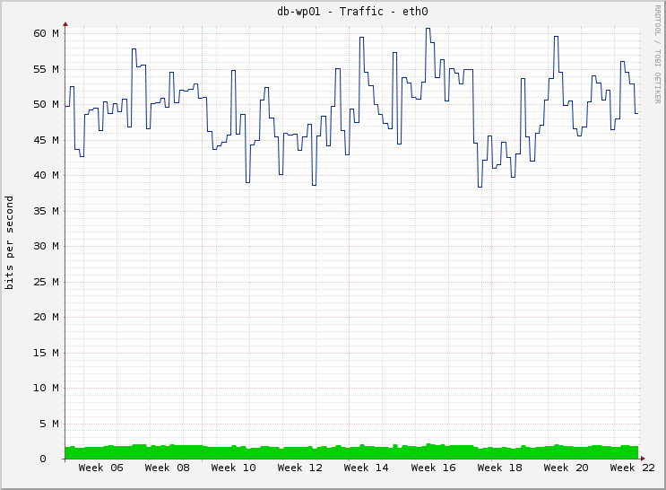
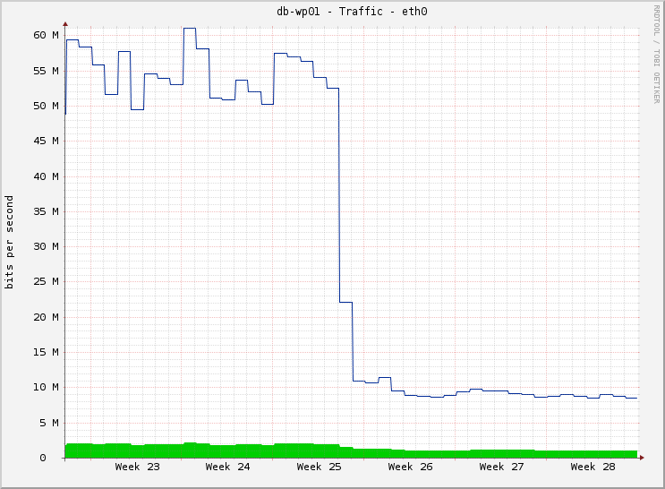

Mniejsza baza to krócej trwające selecty, szybciej odbudowywujące się indeksy po insertach.
Mniej danych w komunikaci to mniejszae obciążenie serwera aplikacji i serwera bazy danych.
Krótszy czas generowania strony w dobie Page Speed'a i wpływu tego parametru na wyszukiwanie może mieć kluczowe znaczenie dla strony.
Rozmiar bazy danych zależy w jakimś procencie od daych których nie potrzebujemy.
Większa liczba tabel, to większe ryzyko uszkodzenia i blokady bazy.
Więcej danych to więcej potrzebnego ramu na obsługę strony.
Transfer wewnętrzny bardzo ważny, zewnętrzny raczej marinalny.
Opis sytuacji jaką mieliśmy w sieci blomedia w trakcie rozwiązywania kłopotów z wydajnością.
Przy InnoDB opowiedzieć króciutko o solr'ze.

Wykres pokazuje poziom transferu między serwerem bazy danych a serwerem aplikacji.
Opowiedzieć o wielokości transferu z serwera cachującego zapytania do aplikacji i zwrócić uwagę, że były mniejsze!
select option_name, length( option_value ) from wp_options where autoload = 'yes' order by 2 desc limit 50;Co podlegało analizie, jakie wtyczki zostały wykorzystane i do czego..
Znalezienie tych danych i struktur, które zostawiły odistalowane lub skasowane wtyczki.
Opis zagadnień związanych z czyszczeniem bazy danych.

Wykres prezentuje dramatyczny spadek transferu między bazą danych a aplikacją.
wtyczka powinna zadbać o to co znajduje się i co zostawia w bazie danych
Jakie hooki możemy i powinniśmy wykorzystać w trakcie pisanie wtyczki, tylko listing, bez wyjaśniania.
W czasie włączania wtyczki możemy zainstalować lub zmodyfikować swoje tabele. To jest też najlepszy moment na zapisanie danych domyślnych.
Włączanie wtyczki w czasie aktualizacji pozwala na konwersję przechowywanych informacji w przypadku ich zmiany między wersjami.
Hook uruchamiany jest zawsze w czasie aktywacji wtyczki, trzeba pamiętać, że w trakcie aktualizacji wtyczka jest uruchamiana.
W czasie wyłaczania wtyczki musimy bardzo dobrze określić to, które dane należy zachować i odtworzyć przy ponownym włączeniu, a z których powinniśmy zrezygnować.
W czasie deaktywacji wtyczki czyścimy dane tymczasowe oraz cache, jeżeli do pracy tworzone były tabele zawierające dane tymczasowe, kasujemy również takie tabele.
W czasie usuwania wtyczki kasujemy dane, konfiguracje oraz usuwamy używane tabele.
Można oczwywiście dodać metodą przechowującą konfigurację, ale należy pamiętac o wyłączeniu autoload.
Opisać procedurę, zwrócić uwagę na koniecznoeśc wyłaczania wtycek z panelu administratora, zamist ich kasowania, choć to ostatnie jest czasem koniecznością.
Clean Options http://wordpress.org/extend/plugins/clean-options/
Do czego służą te wtyczki i co znimi można zrobić. W czym są pomocne?
Zwrócić uwagę na dynamicznie generowane nazwy wtyczek i na miękkie dopasowania.
WP-Options-Manager - nie działa, dostosowana do starego typu WordPressa MU, po poprawkach wywala przeglądarkę, bo próbuje wyświetlić wszystkie znalezione opcje.
Wtyczki do profilowania bazy pomogą również tam, gdzie nie ma jakiś indeksów.
Krótkie podsumowanie zalet sprzątania po sobie.